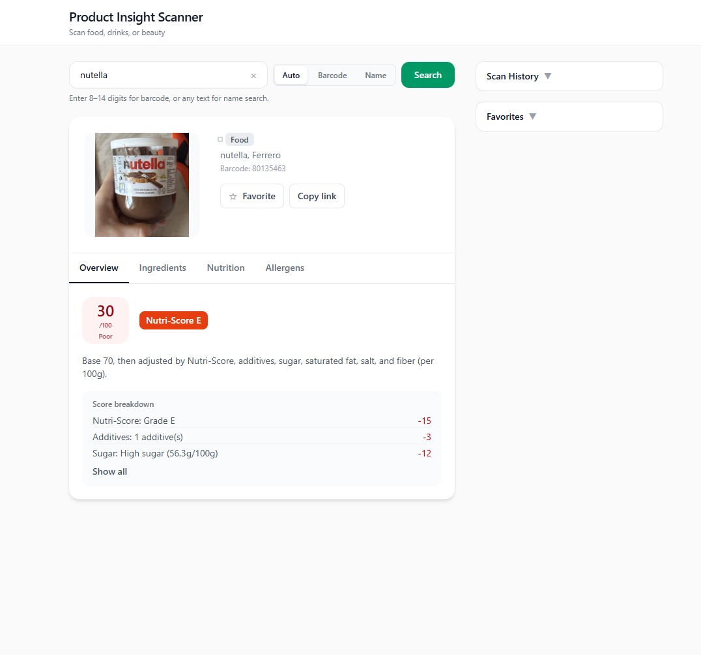

This pattern keeps rendering dumb and transformation explicit: easier to debug when a barcode returns half a nutrition table, and easier to explain in critique.
Design case study
Product Insight Scanner
A barcode-led product reader that turns messy open data into a small set of scores and plain-language cues—so someone in a store can decide without opening five tabs.

Project links
Why this exists
Problem
Ingredient lists and nutrition panels are accurate on the label and hostile on a phone screen. Most people are not trying to become dietitians in the aisle—they want a fast read on whether a product is roughly aligned with what they care about.
This project asks how far you can get with open data if you commit to a narrow job: scan, summarize, explain in one place.
Intent
Goals
- Reduce cognitive load — Replace raw tables with a small scoring vocabulary users can learn once.
- Stay honest about data — Surface missing fields and API gaps instead of inventing detail.
- Fast loop — Optimize for barcode in, verdict visible without deep navigation.
- Explainability — Pair scores with short rationale text, not only color badges.
Ownership
Role & scope
What I owned
Client request flow, presentation of API payloads, error and empty states, and the visual hierarchy between score, ingredients, and context chips.
Scope & constraints
In scope: Open Food Facts–style lookup path, scoring presentation, responsive layout.
Out of scope: Owning the full global product database or certifying medical claims.
How the work moved
Process overview
Data-heavy products need the same narrative discipline as visual apps: what enters, what transforms, what leaves.
- 01Frame — Decide which signals matter for a first screen vs. secondary detail.
- 02Shape data — Normalize inconsistent API fields into a stable view model.
- 03Design UI — Match the mental model: product identity → scores → breakdown.
- 04Harden — Handle not-found, slow network, and partial nutrition.
Framing
Research & insights
Review of similar transparency apps and a few informal scans of real products. The friction was rarely “missing a barcode”—it was inconsistent payloads and jargon-heavy additives lists.
- Users anchor on a single headline score before they expand detail.
- Additives need translation — codes alone do not communicate risk at a glance.
- Trust drops when the app hides uncertainty (unknown ingredients, incomplete nutrition).
Intentional choices
Key design decisions
-
Score-first layout
Decision: Put the composite read and product identity above the fold before ingredients expand.
Why: Matches the in-store question: “Roughly good or not?”
Usability: One glance before scrolling into detail.
-
Explicit empty and error paths
Decision: Treat “not found” and “partial data” as designed states, not exceptions.
Why: Open datasets are messy; pretending completeness erodes trust.
Usability: Users know what to try next (different code, retry, check spelling).
-
Chunked ingredient reading
Decision: Break additives and macros into scannable groups instead of one wall.
Why: Long lists defeat the point of a scanner app.
Usability: Easier to compare two products mentally.
-
Narrow feature promise
Decision: Stay close to scan-and-explain rather than building a full lifestyle dashboard.
Why: Keeps the assignment defensible and the UI coherent.
Usability: Faster task completion for the core job.
Structure
Turning API data into a readable product story
The design problem is not “call an API”—it is deciding what to throw away so the screen stays legible. The client maps raw records into a view model the UI can render predictably; scores and copy sit on top of that layer so presentation stays stable when fields are missing.
Normalization sketch
const product = await fetchByBarcode(code);
const viewModel = normalizeProduct(product);
return {
scores: deriveScores(viewModel),
highlights: pickHighlights(viewModel)
};Fetch → Normalize → Present
Evolution
Iteration & refinement
Earlier drafts tried to show everything the API returned. Later passes cut secondary metrics and tightened typography so the score and rationale stayed the focal point on small screens.
Outcome
Final product
- Barcode entry — Obvious primary path with feedback on lookup state.
- Score + rationale — Numbers paired with short text so badges are not the only signal.
- Ingredient scan — Grouped lists that respect mobile thumb reach.
Implementation
Build snapshot
The split between Node and the client exists so the browser is not holding secrets or duplicating validation—the UI stays focused on presentation while the server handles fetch and shaping concerns.

Closing
Reflection & next steps
Insight: The interface quality tracked how disciplined the view model was. When normalization was sloppy, the UI had to lie or clutter; fixing structure upstream made layout decisions easier.
Tradeoff: A simple scoring model is easier to explain but cannot capture every dietary nuance—that is an honest limit for this scope.
Next: User test with ten real products people actually buy; add clearer sourcing for where each score comes from; tighten keyboard and screen-reader paths for the scan field.